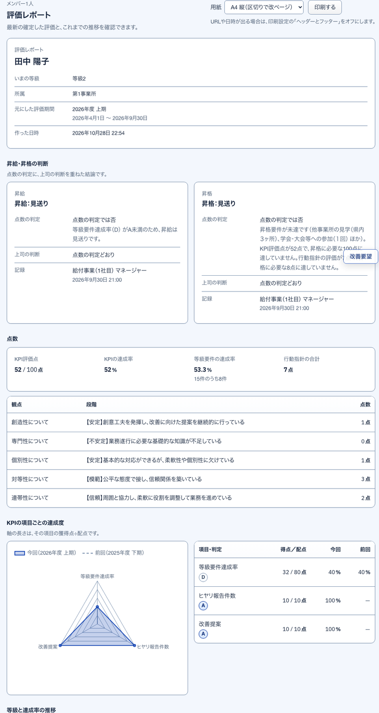

できあがる評価レポート例。S45 で見て印刷する

12答えと設定の欄が、どこに入るか評価の CSV とレポートで同じ名前
答えと設定の欄
評価とレポートの項目
根拠
等級要件の「はい」の数アンケート（S34）
→
等級要件達成数・達成率例: 8 / 15 → 53.3%
素材:src/lib/domain/scoring.ts
行動指針の段階アンケート（S34）
→
行動指針得点・判定例: 7点
素材:src/lib/evaluate.ts
KPI の実績の値アンケート（S34）
→
KPI評価内訳・点数根拠項目ごとのランク（例: 83件 → A）
素材:src/lib/domain/scoring.ts
ランクの境目と配点制度の設定（S19）
→
KPI合計点・評価可能配点・KPI達成率例: 52 / 100点
素材:src/lib/domain/scoring.ts
昇格の要件と必要な点数制度の設定（S15）
→
昇格要件判定・昇格の点数の判定例: 昇格は見送り
素材:src/lib/domain/scoring.ts
マネージャーの判断と理由評価1件（S39）
→
上司の判断と理由・上長からのコメント確定のときに入る
聞き取り:H10
PDF・Excel のファイル評価レポート（S45）
→
今はブラウザの印刷で PDF、表は CSVファイルの形が決まってから足す
決めること:Q07
3評価の CSV の 30 列の内訳S38 で書き出す
- アンケートの答えから
- しくみが計算して入れる
- 制度の設定から
- 確定のときに入る（それまで空欄）